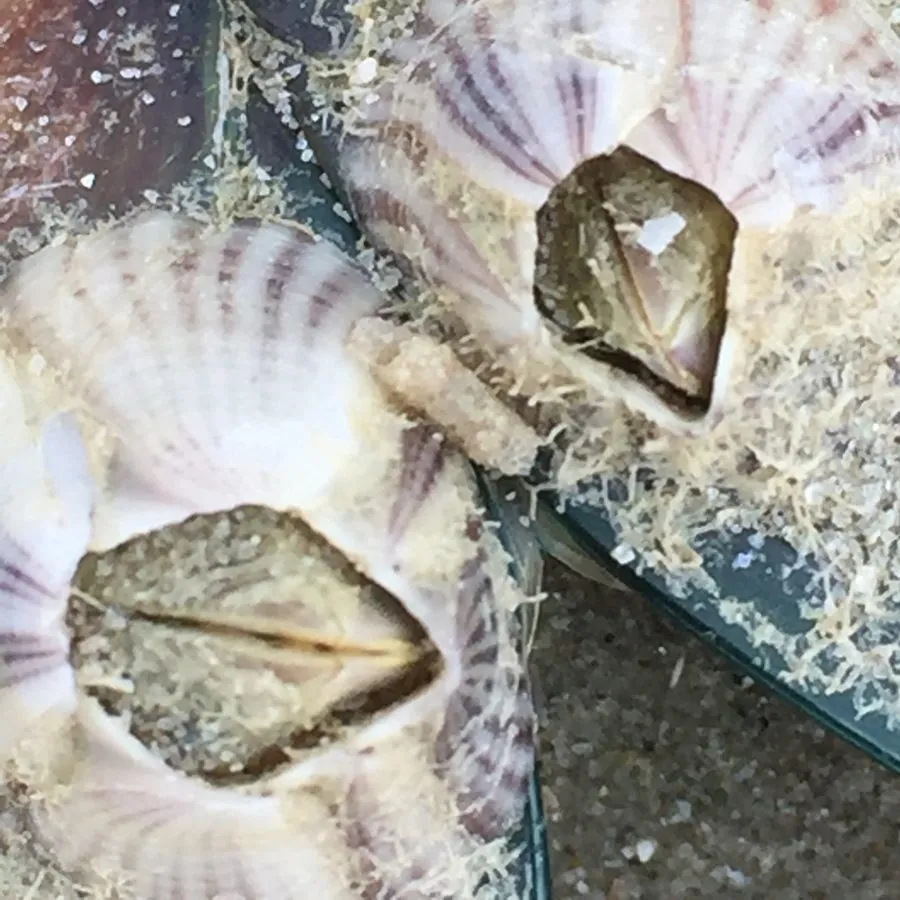

甲壳动物 · 动物界
网纹藤壶 Amphibalanus reticulatus

附着在岩石、船底和码头上的小型藤壶，壳表有网状纹路，退潮时露出水面，涨潮时伸出蔓足滤食浮游生物。
- 分类
- 门节肢动物门纲软甲纲目无柄目科藤壶科属纹藤壶属
- 栖息环境
- 岩石、贝壳、船底、码头和红树根等硬质基底
- 地理分布
- 全球热带和亚热带沿海，中国南方海岸常见
- 保护级别
- IUCN 暂无评估；中国未列入国家重点保护名录
物种志
网纹藤壶壳口直径约 1–2 cm，壳呈圆锥形，灰白或浅褐色，表面有细密的网状纹路和纵肋；壳口呈菱形，盖板闭合紧密，退潮时可防止水分流失。
它分布于全球热带和亚热带沿海，在中国南方海岸常见，附着在岩石、贝壳、船底、码头和红树根上，营固着生活。涨潮时它打开盖板，伸出羽毛状的蔓足滤食浮游生物和有机颗粒；退潮时紧闭盖板，减少水分蒸发。网纹藤壶繁殖快，幼体浮游一段时间后寻找硬质基底附着，是污损生物群落的重要成员，也会增加船舶阻力；它对盐度和水温变化有一定耐受能力，密集附着时会改变岩石表面的群落结构。目前 IUCN 暂无评估；中国未列入国家重点保护名录。
形态与习性
- 食性滤食浮游生物和有机颗粒
- 壳径约 1–2 cm
- 识别壳表有细密网状纹路和纵肋
- 习性固着生活，退潮闭壳、涨潮滤食
- 繁殖幼体浮游后寻找硬质基底附着
- 影响污损生物，会增加船舶阻力
趣味知识
- 网纹藤壶的壳表有细密网纹，像给石头上贴了一层小格子。
- 退潮时它紧闭盖板保水，涨潮时才伸出羽毛状的蔓足滤食。
- 它大量附着在船底会增加阻力，是常见的污损生物。